timeline
title Evolution of LLM tooling
2017 : Transformer : "Attention is all you need"
2018 : GPT : Pre-trained models
2019 : GPT-2
2020 : GPT-3
2021 : GitHub Copilot : "The model in the editor"
2022 : ChatGPT : "Chat for everyone"
2023 : Function calling : "The model makes a call"
2024 : MCP : "A standard for tools"
2025 : Agents : "The binding"
2026 : Adoption : "Apps ship MCP servers"
Agentic AI Workflows
From LLMs to Agents in Production
Ashwin Mohanan1
1 Sweden AI Factory / RISE
25 November 2026
Introduction
Agenda
- What is an LLM: proprietary vs. open-weight models
- Prompt engineering vs. RAG vs. fine-tuning (and reasoning and agentic AI)
- What is an agent: harness, loop, tools
- Life-science Agentic AI use cases (a detour)
- Anatomy of an agentic workflow
- From single agents to multi-agent workflows: patterns and trade-offs
- AgentOps: evaluation, traceability, observability
Learning outcomes
By the end of this deck you can:
- explain what an LLM is, and choose between proprietary and open-weight models
- compare prompt engineering, RAG and fine-tuning, and identify what an agent adds on top
- describe the key features of an agentic workflow: permissions, system prompt, and context engineering via capabilities
- weigh the pros and cons of single-agent vs. multi-agent patterns
- set up evaluation, tracing and observability (AgentOps) for agents
About this material
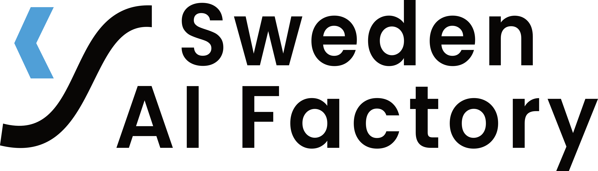
Based on
- Agentic AI: Beyond Coding Assistants and Chatbots workshop and
- The AI Factory roadshow lesson
CC BY-SA 4.0
What is an LLM?
An LLM predicts the next token
A Large Language Model is a neural network trained on vast amounts of text to predict what comes next — one token at a time, probablistically
How LLMs are trained and why cut-off dates matter
- Pre-training: next-token prediction on huge text corpora (trillions of tokens) — expensive, done by few actors
- Instruction tuning / SFT: trained on prompt–response pairs to follow instructions
- RLHF / alignment: outputs aligned with human preferences
The training cut-off date has practical consequences. In coding:
| Impact | Example |
|---|---|
| Unknown libraries | tools released after cut-off won’t be suggested |
| Breaking changes | outdated API usage in generated code |
| Security updates | vulnerabilities patched after cut-off not reflected |
Stochastic — and confidently wrong
- Output is probabilistic: the same prompt can give different answers
- LLMs are pattern-matching systems, not databases: they can be confidently wrong, especially on novel or complex problems
“An over-confident pair programming assistant” — Simon Willison
- Always verify the output. Don’t anthropomorphize the model.
Calling an LLM from Python
Any OpenAI-compatible endpoint works — in the workshop we use Aitta on the LUMI supercomputer:
from openai import AsyncOpenAI
client = AsyncOpenAI(
base_url="https://aitta.csc.fi/v1", # or https://openllm.scilifelab.se/api/, localhost vLLM, ...
api_key=os.environ["OPENAI_API_KEY"],
)
stream = await client.chat.completions.create(
model="google/gemma-4-31b-it",
messages=[{"role": "user", "content": "Where does 'hello world' come from?"}],
stream=True,
)
async for event in stream:
print(event.choices[0].delta.content or "", end="")The OpenAI API has become the de facto standard — the same client code switches providers.
Aitta — LLM inference on the LUMI supercomputer
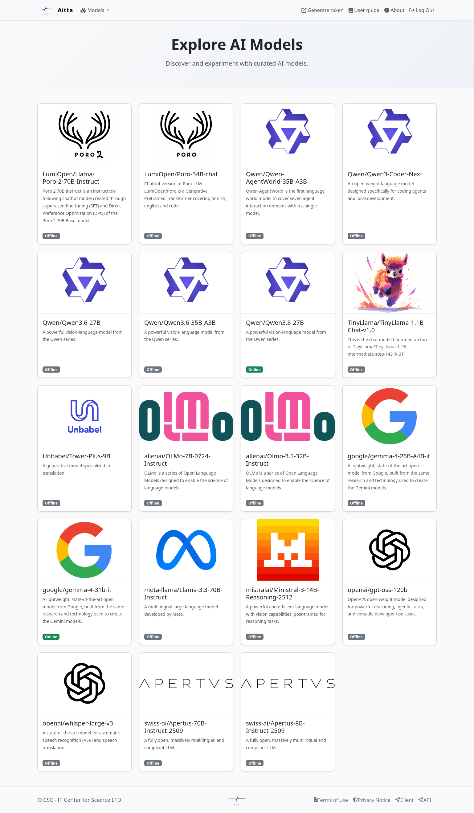
- Aitta (CSC) is an inference service for open-weight LLMs on the LUMI supercomputer in Finland
- OpenAI-compatible endpoint:
https://aitta.csc.fi/v1— the workshop client code above runs against it as-is - Curated model catalogue (LumiOpen/Poro, Qwen3, OLMo, Gemma, Llama, Apertus, …) — models are marked online/offline depending on what is currently deployed
SciLifeLab OpenLLM — open-weight models for the life-science community
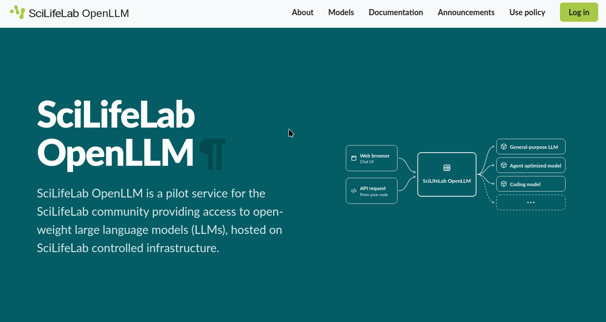
- Pilot service providing the SciLifeLab community access to open-weight LLMs, hosted on SciLifeLab-controlled infrastructure
- Two ways in: web browser chat UI or API requests from your code (OpenAI-compatible:
https://openllm.scilifelab.se/api/) - Model zoo covers general-purpose, agent-optimized and coding models
Adapting a model: prompting, RAG, fine-tuning
Three levers — three different things changed
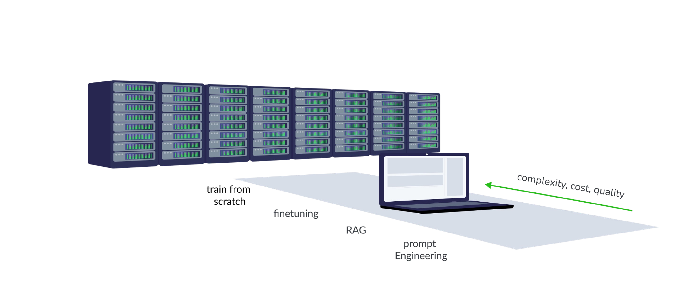
Prompt engineering:
change the instructions and examples
RAG:
supply external evidence at inference time
Fine-tuning:
change model parameters through trainingGoal: the least complex system that meets the requirements. The central diagnostic question:
Is the model failing because it does not know what to do (→ prompt), because it lacks evidence (→ RAG), or because it cannot reliably perform the behaviour (→ fine-tune)?
Prompt engineering vs reasoning models
- Prompt engineering changes the model’s input, not its weights: task, context, constraints, output format, examples, abstention behaviour
- In 2026, much of AI engineering is context engineering — what goes into the context window
- Reasoning models (trained with reinforcement learning on reasoning traces) internalize much of what prompt engineering used to do — chain-of-thought, step-by-step breakdowns, careful formatting — so elaborate prompting patterns are less necessary with them
- Still first choice when the model already has the capability and the evidence fits in context
RAG: retrieval-augmented generation
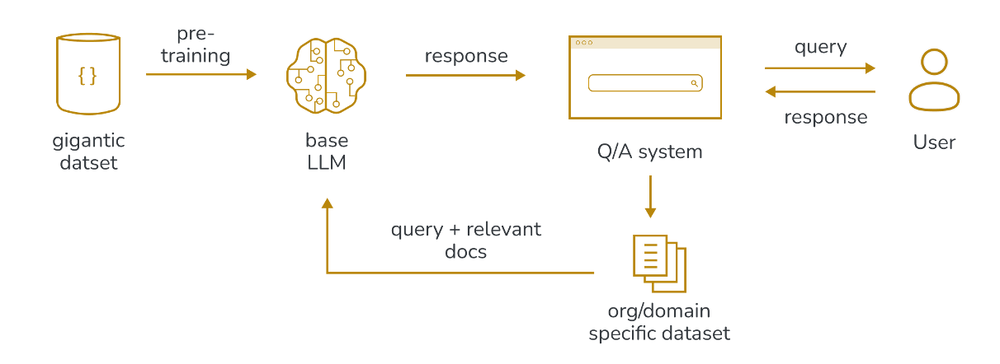
- Best for private, frequently updated, too large, or citable knowledge (policies, papers, docs)
- Model parameters unchanged; sources can be cited and inspected
Warning
RAG does not eliminate hallucinations — the model can still misread or ignore the evidence; needs grounding instructions + evaluation
Fine-tuning: changing the weights
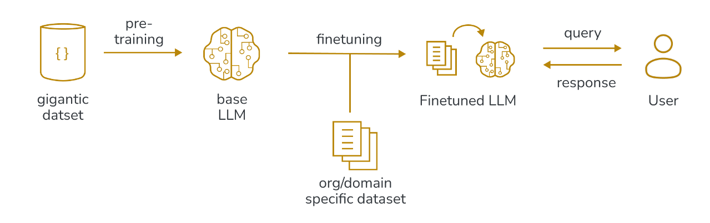
- Continues training on task-specific examples; changes some or all parameters (full fine-tuning) or adds small adapters (LoRA / PEFT)
- Best for repeated, measurable behaviour: specialised output formats, domain style/vocabulary, recurring input→output mappings
Warning
When NOT to fine-tune: knowledge that changes over time (→ RAG), poor performance due to vague prompts (→ improve prompt first), simple format constraints, no evaluation set, too few examples
What is an agent?
A brief history before Agentic AI
An agent = harness + LLM + capabilities
The term agent is overloaded. In this workshop it means:
A computer program (a harness) that leverages an LLM to interact with the program’s environment (information, filesystems etc.) in order to accomplish a task.
flowchart TB
In([In])
Out([Out])
LLM[LLM]
In --> LLM
LLM --> Out
subgraph Capabilities["Capabilities"]
direction LR
Planning[Planning]
Tools[Tools, MCP, Skills..]
Memory[Memory]
end
LLM <-.->|TODO lists| Planning
LLM <-.->|Action/Feedback| Tools
LLM <-.->|Read/Write| Memory
style In fill:#ffdac1
style Out fill:#ffdac1
style LLM fill:#e2f0cb
style Tools fill:#f0c9e8
style Memory fill:#ffe6cc
Capabilities are what make it more than a chatbot: planning, tools, memory.
The agent loop and tool calling
sequenceDiagram
participant Harness
participant Inference as Inference server
Harness->>Inference: Request with tool list
Note over Inference: Generate output
Note over Inference: Parse tool call
Inference-->>Harness: Response with tool call
Note over Harness: Execute tool call
Harness->>Inference: Request with tool result
Note over Inference: Generate answer
Harness exposes the necessary tools for or capabilities an LLM to interact.
The docstring and type hints become the tool description the LLM sees.
Why tools and history are needed
- A plain LLM cannot tell the time and is stateless — it forgets every previous message
- The harness resends the full conversation history with every request
- Tools can be chained.
- Example: a flight search agent
- Steps: resolve “tomorrow” with
get_current_datetime, then followed by another toolsearch_flights - Finally, provide response
Demo – your first agent
Note
We are using Pydantic AI here
from openai import AsyncOpenAI
from pydantic_ai import Agent
from pydantic_ai.models.openai import OpenAIChatModel
from pydantic_ai.providers.openai import OpenAIProvider
client = AsyncOpenAI(
api_key=os.getenv("OPENAI_API_KEY", default="EMPTY"),
base_url=os.getenv("MODEL_BASE_URL", "https://aitta-api.csc.fi/openai/v1"),
)
model = OpenAIChatModel(
os.getenv("MODEL_NAME", "google/gemma-4-31b-it"),
provider=OpenAIProvider(openai_client=client),
)
agent = Agent(model)async def main():
history = []
while True:
try:
prompt = input("You: ")
except (EOFError, KeyboardInterrupt):
break
if prompt.strip().lower() in {"quit", "exit", ""}:
break
async with agent.run_stream(
prompt,
message_history=history
) as result:
print("Agent: ", end="")
async for text in result.stream_text(delta=True):
print(text, end="", flush=True)Demo — a plain LLM cannot tell the time
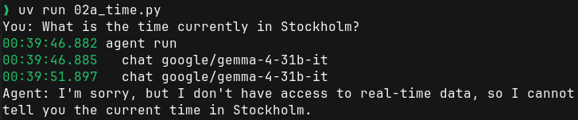
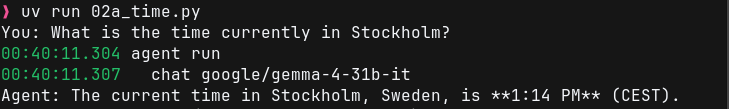
- Ask “What is the time currently in Stockholm?” (
uv run 02a_time.py) - The model either refuses (“no access to real-time data”) or confidently makes up a time — an LLM only generates text
Demo scripts — Agentic AI lesson, episode 2 “Basics of AI agents”
Demo — tools provide necessary context
With --enable_tools, the harness runs get_current_datetime and the answer is correct:
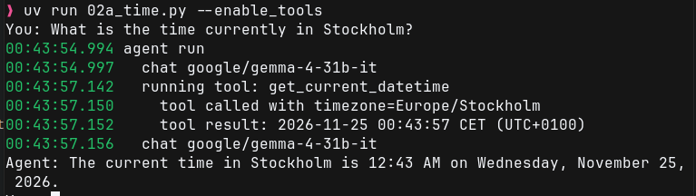
Demo — history allow longer conversations
“I live in Tokyo” → “What is the time currently where I live?”:
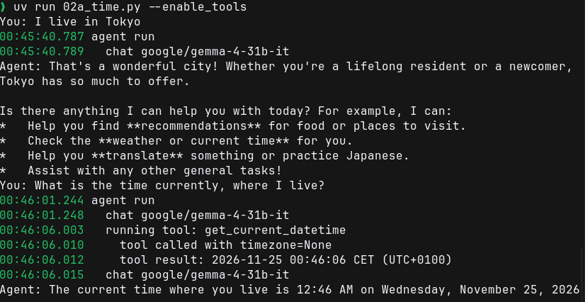
without history (--enable_tools):
tool called with timezone=None -> wrong city
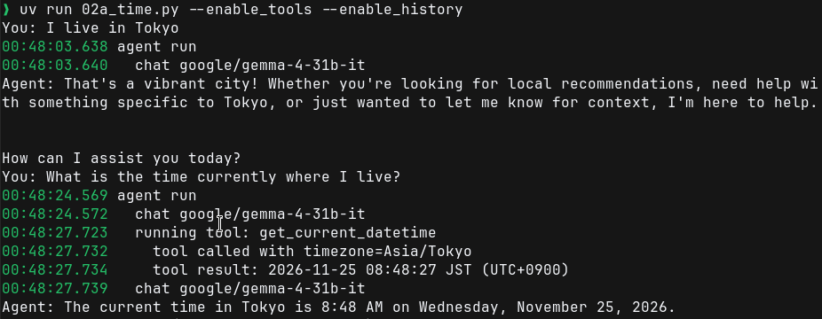
with history (--enable_tools --enable_history):
timezone=Asia/Tokyo -> correct answer
Context engineering: the context is resent every time
- LLMs are stateless: the whole context goes with every request, including every tool-call round trip
- Agents and tools also demand larger context sizes → slower first token, higher requirement for GPU memory or VRAM.
- Long histories need ways to reduce context: truncation / sliding window, compaction / summarisation, dropping stale tool results.

Frameworks and our running example
- Many frameworks provide the same features: Pydantic AI, LangChain, OpenAI Agents SDK — this talk will use Pydantic AI
- Running example throughout: a flight-booking assistant, built up step by step from a single REST call to multi-agent workflows
Life-science use cases (a detour)
Use case: Agentic AI in labs and systems biology
Use case
- LLM agents + ILP (inductive logic programming) + ontologies generate hypotheses in yeast systems biology
- Agents design, formalize and execute robotic experiments (lab automation + metabolomics)
- Results refine hypotheses; all recorded in a knowledge graph
Agent capabilities
- Tools: Python/R/Prolog, lab robotics, LLM APIs, DB (SPARQL)
- Memory: persistent graph database; reuse of prior data
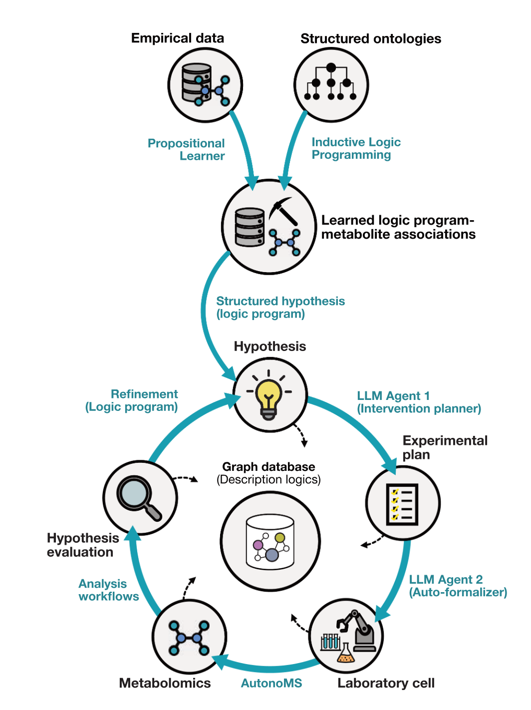
Paper: Brunnsåker et al. (2026); code & data: Brunnsåker (2026)
Agentic AI & In Silico Team Science
Survey in a nutshell
- Perspective: agentic AI = teams of autonomous computational “experts” collaborating on biomedical research
- Key algorithms: LLMs, reinforcement learning (RLHF/RLVR), evolutionary algorithms
- Building blocks: reasoning, verification, reflection, planning, tool use (RAG, MCP), memory, communication (agent–agent / human / tool)
- Applications rivalling human performance: literature review, hypothesis generation, experimental design, data analysis, end-to-end research
- Challenges: data heterogeneity, privacy/security (GDPR, HIPAA), cost & energy, fairness, reliability
- Trajectory: assistant today → autonomous collaborator (“ally”) tomorrow
flowchart TD
H["🎯 Human researcher<br>sets research goal"]
classDef hub fill:#7c3aed,stroke:#5b21b6,stroke-width:2px,color:#ffffff
classDef current fill:#2563eb,stroke:#1e40af,stroke-width:2px,color:#ffffff
classDef future fill:#059669,stroke:#065f46,stroke-width:2px,color:#ffffff
classDef phase fill:none,stroke:#f59e0b,stroke-width:2px,color:#f59e0b
class H hub
H --> T1
subgraph T1["📚 Literature review"]
T1a[Current: retrieval,<br>extraction, summaries]:::current --> T1f[Future: systematic surveys,<br>knowledge gaps, synthesis]:::future
end
subgraph T2["💡 Hypothesis generation"]
T2a[Current: generate &<br>refine hypotheses]:::current --> T2f[Future: novelty-feasibility,<br>impact, ethical guardrails]:::future
end
subgraph T3["🧪 Experimental design"]
T3a[Current: workflows,<br>pseudocode protocols]:::current --> T3f[Future: constraints,<br>robotic labs & simulations]:::future
end
subgraph T4["📊 Data analysis"]
T4a[Current: pipelines,<br>code, tool use]:::current --> T4f[Future: new methods,<br>fairness, high-dim data]:::future
end
subgraph T5["🔬 End-to-end investigation"]
T5a[Current: full cycles,<br>e.g. Virtual Lab]:::current --> T5f[Future: wet-lab integration,<br>human-in-the-loop]:::future
end
class T1,T2,T3,T4,T5 phase
T1 --> T2 --> T3 --> T4 --> T5
T5 -. iterative refinement .-> T1
Applications of agentic AI systems in various biomedical research tasks. Current uses vs possible future.
Anatomy of an agentic workflow
The pieces
- Model: the LLM that decides what to do next
- Harness: the program that runs the loop, executes tools, keeps history
- System prompt / instructions: always at the start of every request — the agent’s standing orders
- Capabilities (context engineering): tools, MCP servers, skills, memory, planning
- Permissions: which tools the agent may call, which workspace it sees, what needs human approval
Capability: MCP (Model Context Protocol)
- MCP server exposes tools/resources over a standard protocol (
streamable-http,stdio); the host (harness) connects with an MCP client - Write the server once — reuse it in any harness (Pydantic AI, Claude Code, Codex, OpenCode), in any language
- Many services already provide MCP servers (e.g. a public LUMI documentation MCP server)
Same agent loop, same tool-call format — the only difference is where the tool runs: in your process vs. on the MCP server.
Capability: skills
- A skill is a folder with a
SKILL.md: YAML frontmatter (name,description) + markdown body — plain instructions, no coding needed - Progressive disclosure: only name + description are always in context; the body is loaded only when the LLM calls
load_capability
- Open standard → portable across harnesses. But a skill is a nudge, not a rule — the model may ignore it
Skills
A possible use is (softly) enforces a travel policy
- “Cost per km must not exceed 0.25 EUR” as text in a skill can be ignored or miscalculated
- Hard rules belong in code: a check inside the
book_flighttool that rejects non-compliant bookings - Skills are best for guidance, conventions, workflows
Note
See also:
- https://agentskills.io/ - the specification
- https://www.skills.sh/ - informal collection of skills made by the community
Capability: memory
- Short-term: conversation history — lost on restart, resent every request
- Long-term: the agent writes distilled notes to
MEMORY.mdvia tools (write_memory,read_memory,search_memory,delete_memory); the harness injects the file into every request
- Unlike skills, memory is written by the agent during use — and there is no common standard across harnesses
System prompt vs. skills vs. tools
| System prompt | Skill | MCP tool | |
|---|---|---|---|
| In context | always | name+description always, body on demand | definition always, result after call |
| Decided by | the harness builder | the LLM (load_capability) |
the LLM (tool call) |
| Can run code | no | no (in our setup) | yes |
| Portable | copy text | open standard | any MCP client |
Tools define what the agent can do; skills describe how it should do it.
Permissions and trust boundaries
Warning
- Only connect to MCP servers and skills you trust: their descriptions go straight into the LLM’s context, and their code runs with your permissions
- Scope the workspace (
LocalWorkspace) to a dedicated, secrets-free directory — keep secrets and sensitive information outside it - Side-effecting tools (e.g.
book_flight) should require explicit user confirmation — enforce in code, not just in a skill - Remote MCP servers need authentication (OAuth) and per-agent least-privilege tool sets
Note
Pydantic AI harness provides a Permissions capability to ease this.
Note however. that permission is not the same as authorization.
From single agents to multi-agent workflows
Why go multi-agent?
As capabilities pile into one agent, the possible execution paths grow exponentially — hard to reason about, hard to validate. Splitting into agents with narrow roles helps:
- Separation of concerns: limited tool set per agent (like encapsulation)
- Per-agent model selection: cheap model for simple steps, strong model for hard ones
- Smaller contexts: separate message history per agent
- Structured outputs + validators after each step — known failures caught early
Warning
- Cost: more model calls
- More handoffs, more places to fail
Pattern 1: programmatic hand-off
Application code chains agents in a fixed sequence; deterministic functions can sit between steps.
Type and logic validation is crucial.
- Each agent has a narrow role, its own output type (
TripRequest,list[FlightDetails],SeatPreference), and output validators (ModelRetryon invalid output) - ✅ Predictable: the pipeline is hardcoded — good when steps and preconditions are known
graph TB
prompt(("user prompt")) -->|"str"| extract["infer_trip_request_via_trip_extractor_agent"]
extract -->|"TripRequest"| search["infer_flights_via_search_agent"]
search -->|"No flights: user changes trip"| prompt
search -->|"list[FlightDetails]"| select["select_flight"]
select -->|"None: change trip"| prompt
select --> seat["infer_seat_via_seat_preference_agent"]
select -->|"FlightDetails"| book
seat -->|"SeatPreference"| book["infer_purchase_via_book_agent"]
book -->|"next request"| prompt
prompt -->|"quit"| END
Pattern 2: agent delegation (sub-agents)
One orchestrator agent routes tasks to specialist sub-agents via a delegate_task(agent_name, task) tool.
- Each sub-agent runs with its own history, so tasks must be self-contained
- ✅ Flexible: the model decides routing — good when the next step depends on intermediate results
graph LR
prompt(("user")) -->|"prompt"| orch["orchestrator"]
orch -->|"delegate_task(agent_name, task)"| subs
subgraph subs["SubAgents capability"]
direction LR
extract["trip_extractor_agent"]
search["flight_searcher"]
seat["seat_extractor"]
book["flight_booker"]
end
subs -->|"task result"| orch
orch -->|"question"| ask_user["ask_user"]
ask_user -->|"answer"| orch
orch -->|"ask_user"| prompt
prompt -->|"quit"| END
classDef subagents fill:#eaf2f3,stroke:#4C979F,stroke-width:2px,color:#1c2833
class subs subagents
Also on the menu: graphs and deep agents
- Graph-based control flow: a state machine drives multiple agents — powerful, but…
“if agents are a hammer and multi-agent workflows a sledgehammer, graphs are a nail gun” — consider simpler patterns first
- Deep agents: autonomous agents with planning, file operations, task delegation, sandboxed code execution
Pros and cons at a glance
| Single agent | Hand-off | Delegation | |
|---|---|---|---|
| Control | simple loop | hardcoded pipeline | orchestrator decides |
| Predictability | medium | high | lower |
| Flexibility | high | low | high |
| Validation | inside tools | after every step | at orchestrator |
| Cost/complexity | lowest | medium | more calls, more failure points |
| Best when | task is small & fluid | strict, known steps | routing depends on results |
Start with a single agent or fixed hand-off; add autonomy only when needed.
AgentOps: evaluation, traceability, observability
Why evaluate and observe?
Travel agent with MCP tools: search_flights, book_flight (writes a row to bookings.csv)
Possible observations
- “Book me a flight to Stockholm tomorrow” — no name given → agent invents a passenger name instead of asking
- Agent calls
book_flightwithout confirmation, despite real-world consequences - Tracing MCP calls in the logs shows tools called and in what order — the only ground truth for what the agent actually did
Resulting improvements
- Optimize system prompt & tool description — agent must ask for missing parameters instead of guessing
- Add human-in-the-loop — confirm before any booking is executed
- Fix tool implementation — validate parameters server-side before writing to
bookings.csv
Takeaway: agents act in the real world through tools; observation tells us what they did, evaluation whether it was correct.
Evaluating agents ≠ evaluating chatbots
A correct final answer can still be a failure: the agent may have called search_flights twenty times, ignored preferences, or been right by accident. Evaluate:
- task success — did it accomplish the task?
- trajectory — right tools, right order, right arguments, no wasteful repeats
- memory usage — retrieved/stored the right facts, invented nothing
- cost — tokens, time, number of steps
Eval datasets and deterministic checks
Build a small evaluation dataset of prompts with known expectations — like regression tests for agents:
Re-run the dataset after every change to know whether the agent improved, regressed, or got more expensive.
LLM-as-a-judge — and its limits
- When no direct check exists, another LLM can judge the trace and return a typed verdict:
- Prefer deterministic checks when a fact can be checked directly; evaluation is brittle because LLM behaviour is non-deterministic — the “correct” agent may still skip a tool call
Traceability: traces as a diary of a run
- Each model call, tool call and hand-off is a span; a run is a tree of spans — the trace
- Inspect traces when the agent books the wrong flight: which agents ran, what the model was asked, what tools answered
Observability in production
- OpenTelemetry defines the span format (OTLP);
gen_ai.*semantic conventions standardize LLM attributes - Backends: Logfire, Jaeger, MLflow, Langfuse, Phoenix — swap them without touching instrumentation
- Keep tracing in production: watch task success, errors, steps and cost per run; set limits on steps, tokens, time
- Re-run the eval dataset after every model/provider change; add production failures to the dataset
- Traces contain prompts, tool results, personal data — decide who sees them and for how long
Wrap-up
Recap: when do we need an agent?
“If the only tool you have is a hammer, treat everything as if it were a nail.” — Maslow
- An agent is flexible but slower, more expensive, less predictable than plain code
- Known steps in advance → fixed workflow or a single LLM call is enough
- An agent pays off when the next step depends on intermediate results
- Start with the simplest solution; add autonomy only when needed. Evaluate, trace, and keep a human in the loop for decisions that affect people.
References
Agentic AI workshop — https://learn.swedenaifactory.se/agentic-ai-lesson/
- Workshop home — schedule & learning outcomes (deck: Introduction)
- Large Language Models — next-token prediction, training, cut-off dates, Aitta (deck: What is an LLM?)
- Basics of AI agents — harness, tools, history, tool chaining (deck: What is an agent?)
- Model Context Protocol (deck: Anatomy of an agentic workflow)
- Skills (deck: Anatomy of an agentic workflow)
- Memory (deck: Anatomy of an agentic workflow)
- Multiple agents — hand-off, delegation, tracing (deck: Multi-agent workflows)
- Evaluating an agent (deck: AgentOps)
- Security (deck: Security and wrap-up)
- Outlook — serving models, licences, regulation (deck: Proprietary vs open-weight; Wrap-up)
- Setup — Aitta/LUMI access for the hands-on
LLM roadshow — https://learn.swedenaifactory.se/roadshow/
- Roadshow home — episode guide
- What is a Large Language Model? (deck: What is an LLM?)
- Anatomy of an LLM — tokens, attention, transformer blocks (deck: What is an LLM?)
- Choosing an adaptation strategy — prompting vs RAG vs fine-tuning (deck: Adapting a model)
- Fine-tuning large language models (deck: Adapting a model)
- Evaluating large language models (deck: AgentOps)
- Quantisation (deck: Proprietary vs open-weight)
- Quick reference
Bibliography
Brunnsåker, Daniel, Alexander Gower, Prajakta Naval, et al. 2026. “Agentic AI Integrated with Scientific Knowledge: Laboratory Validation in Systems Biology.” Journal of the Royal Society Interface 23 (240). https://doi.org/10.1098/rsif.2026.0043.
Li, Binglan, Anil Kumar Saini, Jose Guadalupe Hernandez, and Jason H. Moore. 2026. “Agentic AI and the Rise of in Silico Team Science in Biomedical Research.” Nature Biotechnology 44 (5): 711–25. https://doi.org/10.1038/s41587-026-03035-1.
Qi, Cong, Wenbo Wang, Siqi Jiang, et al. 2026. “Artificial Intelligence Agents for Biological Research: A Survey.” Briefings in Bioinformatics 27 (1): bbag075. https://doi.org/10.1093/bib/bbag075.
Agentic AI Workflows — Sweden AI Factory ⋅ NBIS ⋅ SciLifeLab